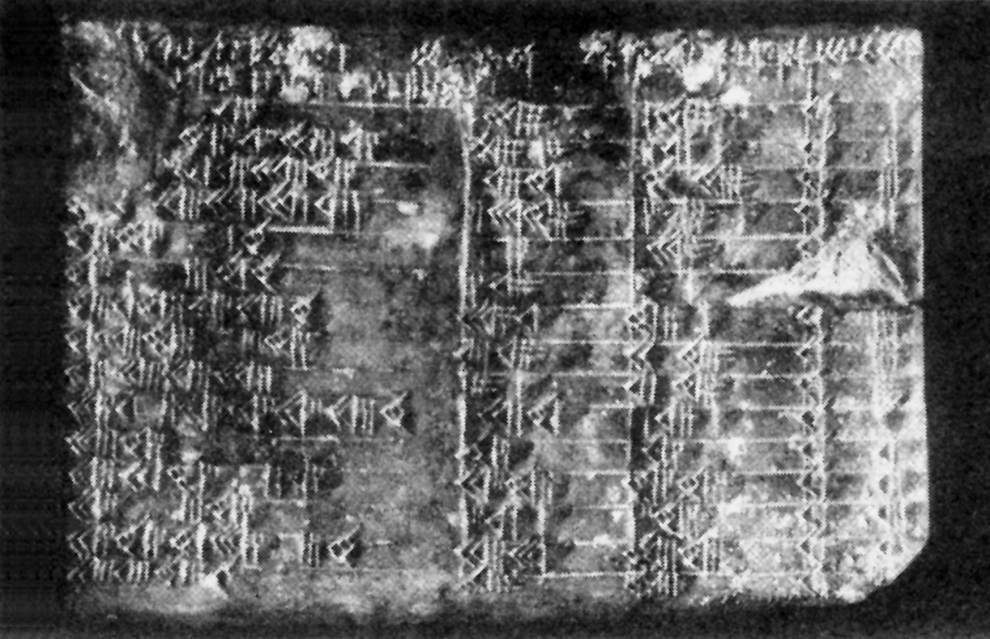
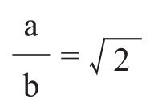
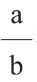
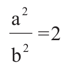

数学是对现实最成功的超越，而当它反过来改善我们力图摆脱的同一现实时，就更令人感到神奇和陶醉了。所有其他逃避现实的方式——性、毒品及诸如此类的嗜好——相较而言都不过是一时之悦。当数学家们迫使世界服从他们的想象所创造的定律时，他们会因自身的成功而充满胜利的喜悦。世界由于数学家的智力劳动而发生了永久性的变化，数学家的创造性成果所导致的精确性，使他们信心百倍，别无他求。
——麻省理工学院数学家罗塔（Gian-Carlo Rota）
安德鲁·瓦佐尼（Andrew Vazsonyi）14岁时，正值两次世界大战之间的年月，他在布达佩斯父亲的鞋店后屋里度过了日日夜夜，不顾其他的需求与责任，一页又一页地填满图表与方程，一个接一个地解决数学问题。他迷上了数学。“我完全上瘾了，”他后来回忆道，“这是最恰当的形容词了。”
痴迷数学，这在年轻人中是屡见不鲜的。数学，像音乐一样，存在于一个形、关系与美的独立世界中，这就是为什么历史上数学神童和音乐神童层出不穷，学步的律师和年少的证券经纪人相对而言却寥若晨星。年幼的儿童，即使还不能穿越马路，也可以探索无穷的数学空间。在20世纪头几十年的匈牙利，对数学与科学的痴迷曾经成为一种时尚。结果产生了一代杰出的科学家和数学家，他们的工作改变了世界。其中一些人如约翰·冯·诺伊曼（John von Neumann）、莱奥·西拉德（Leo Szilard）和爱德华·特勒（Edward Teller），他们的理论思考导致了像原子弹和电子计算机这样的具体成就，结果使他们在学术界之外也赫赫有名。与他们相比，瓦佐尼的一位邻居在神秘的数学世界之外名气就没那么大。这是一个灰眼睛的年轻人，名叫保罗·爱多士，他后来成为数学史上最富有创造性和启发性的数学家之一。
瓦佐尼当时还不认识大他3岁的爱多士，不过他已听说过爱多士的名字。在20世纪20—30年代，布达佩斯是一个有100多万人口的繁华国际都市，但对于狭小而有影响的犹太人圈子来说不过是座小城。瓦佐尼的父亲拜访了爱多士的父亲，告诉他说自己的儿子夜以继日地钻研数学问题并希望能会见保罗。于是1930年的一个午后，有人砰砰敲响了鞋店的大门。
女店员凯茜（Kathy）吓了一跳。从来没有人在这个时候来敲鞋店的门。她去开了门，一个瘦小精悍的男孩一闪而进，其步态使她想起了猩猩。凯茜把他引到后屋，安德鲁正在那里埋头苦读呢。
“给我一个4位数。”爱多士以这样一道命令代替了初次见面的寒暄。瓦佐尼吓了一跳，不过这是一个简单的问题。“2532。”瓦佐尼随口说道。
“它的平方是6 411 024。对不起，我年纪大了，不能告诉你它的立方数是多少。”爱多士当时才17岁，却已经把自己年老衰退这话挂在嘴边多年了。
“你知道多少种毕达哥拉斯定理的证法？”这是爱多士的下一个问题。瓦佐尼知道这个与直角三角形边长有关的著名定理，每个中学生都知道这条定理。他也知道一种证明该定理的方法，但只知道一种。谁需要更多的证明呢？“我知道37种证法。”爱多士宣称。
瓦佐尼60多年以后回忆道，他感到惊奇的是爱多士并非在吹牛。“这种说法对他是不适用的。”瓦佐尼解释说。爱多士就像是一支探险队的队长，在登上崎岖的征程去探索未知的国土之前，要仔细地检查自己的装备、供给和同伴们的战斗力，不过他当时主要是想决定什么样的数学领域最适合他和瓦佐尼共同探讨。在确信他这位同伴足以胜任这种数学旅行之后，爱多士便急忙勾画了康托尔的一条著名而又十分恼人的定理的证明轮廓，这定理出人意料地一举揭示了一个完全未知的领域——无穷中的无穷。爱多士就这样漫不经意地将一颗与存在有关的炸弹抛到了莫名其妙的安德鲁·瓦佐尼面前，然后说道：“我该走了。”他一只脚已跨出房门，去开始另一次数学旅行了。
多瑙河静静地流淌着，却从来不是蓝色的，这条半英里宽的河将布达佩斯按词源分成了两半：布达和佩斯。在山丘起伏、林木葱茏的布达这一边，皇宫高耸在悬崖上，中央是一座萨沃伊的尤金亲王的巨大骑马雕像，这位亲王在1686年从土耳其人手中收复了布达。从这里居高临下，可以眺望通往佩斯的多瑙河大桥的佳境。这座飞架两岸的大桥，桥身呈优美的悬链线，就像是几何书中的图形。在世纪之交，银行家、商人、艺术家和知识分子群集于环绕佩斯城的宽广大街，或竞相乘坐欧洲的第一条地铁。仅在1890年至1900年间，布达佩斯的人口增加了40%，超过了75万，这使它成为欧洲的第六大城市。因为布达佩斯热闹的咖啡馆、林荫大街、公园和金融交易场所，游客们称它为多瑙河上的小巴黎。随着岁月流逝人们才渐渐发现，当布达佩斯的咖啡馆生意兴隆之时，那里的妇产医院犹如福特装配线一样正在生产出一批批的天才。
匈牙利经济与文化的繁荣始于1867年的奥匈协定和由此建立的奥地利-匈牙利二元君主政体。根据这一协议，匈牙利从奥地利统治下获得了某种程度的独立；奥地利帝国变成了奥匈帝国。工业时代的机器和资本主义的机制以惊人的速度改变着匈牙利。“这些机制的操纵经营者大多是犹太人，”历史学家理查德·罗德斯（Richard Rhodes）指出，“这是得益于犹太人的雄心勃勃和精明能干。”二元君主体制建立后不久，反犹太的歧视性法律被取消了，一切公民的和政治的职责展现在犹太人面前，随之而来的是一个犹太移民热潮，与当时犹太人从俄国向纽约的移民潮几乎同时发生。
政治权力仍然掌握在贵族手中，他们对于几乎占一半人口的其他非匈牙利少数民族的漠视，使这些人中有三分之一直到1918年依然是文盲，大多数人被束缚在土地上。那些匈牙利贵族们不屑沾手经商，于是便在犹太人中寻找合伙。到1904年，占人口总数约5%的匈牙利犹太人，却占据了全匈牙利一半左右的律师与商人、60%的医生和80%的金融家的职位。布达佩斯的犹太人在这个国家的艺术、文学、音乐和科学生活中也占据着主导的地位。这一切致使不断增加的反犹人士给布达佩斯起了一个贬称“犹达佩斯”（Judapest）。
甚嚣尘上的反犹势力后来迫使匈牙利社会许多最杰出的人物逃离自己的国家。一些最杰出的科学家与数学家，他们的思想与发明曾经帮助了这个国家的形成，现在也加入了这股移民的浪潮。其中比较有名的有莱奥·西拉德，他是最先认识到链式反应可以释放原子能的科学家；冯·诺伊曼，电子计算机和博弈论的发明人；爱德华·特勒，氢弹之父。在科学界之外不太有名但同样有影响的人物有：西奥多·冯·卡尔曼（Theodor von Kármán），超音速飞机之父；乔治·德·赫维西（George de Hevesy），他由于发明同位素跟踪技术而荣获诺贝尔奖，该发明使几乎所有的科学领域都受到了革命性的冲击；尤金·魏格纳（Eugene Wigner），他对量子力学基础的探讨为他赢得了诺贝尔奖。
这张匈牙利伟大科学家的名单还可以大大扩充，但即使是在科学以外的领域，匈牙利人也同样出类拔萃。音乐方面有指挥家格奥尔格·索尔蒂（Georg Solti），乔治·塞尔（George Szell），弗里茨·赖纳（Fritz Reiner），安塔尔·多拉蒂（Antal Dorati）和尤金·奥曼迪（Eugene Ormandy），以及作曲家贝拉·巴尔托克（Bela Bartok）和佐尔坦·柯达里（Zoltán Kodály）。20世纪匈牙利影视艺术的主宰者是拉斯洛·莫霍伊-纳吉（László Moholy-Nagy），他创立了芝加哥设计学院。好莱坞受匈牙利移民的影响更大。电影界巨擘威廉·福克斯（William Fox）、阿道夫·祖科尔（Adolph Zukor）出生于布达佩斯，亚历山大·柯达（Alexander Korda）和他的兄弟文森特（Vincent）与西奥多（Theodor）、导演乔治·楚科尔（George Cukor）和《北非谍影》（Casablanca）的制片人米歇尔·楚尔蒂兹（Michael Curtisz）也都生于布达佩斯。当然莎莎·嘉宝（Zsa Zsa Gabor）及其姐妹也都是匈牙利人。还有保罗·卢卡斯（Paul Lukas）和埃里希·魏斯（Erich Weiss），后者更为人知的名字是哈里·霍迪尼（Harry Houdini）。
正如物理学家奥托·弗里希（Otto Frisch）所说，“匈牙利移民群星灿烂”，科学界有些人曾热衷于对这一现象做出解释。理论物理学家弗里茨·赫特曼（Fritz Houtermans）的理论是：“这些人其实来自火星。”安德鲁·瓦佐尼则为这种外星人理论提出了一个生动的翻版。“这个世纪初，”他双目闪闪发光，煞有介事地说，“一些来自外太空的人在地球上登陆。他们觉得匈牙利女人最漂亮，是人类仪态的表征。若干年后，这些外星人认为地球不值得他们殖民，于是便远走高飞了。不久一批天才人物就诞生了。这是真实的故事。”
匈牙利天才人物大量涌现的真正原因很难理解。机遇当然扮演了重要的角色。但犹太资产阶级的高度智慧与匈牙利优良的教育制度相结合，便形成了肥沃的土壤，在这片沃土上，随意播种的遗传种子得到了生根开花的机会。
保罗·爱多士的家庭就体现了第一次世界大战前匈牙利犹太民族的智慧与抱负。他的祖父是严守教规的犹太人，同时可能像1867年后大多数匈牙利犹太人一样，是犹太人现代化运动的成员（neologs），这些人恪守犹太人的传统与节日，但却反对让女人剃光头的习俗。爱多士的父亲是霍德梅泽瓦市一名中学教师的儿子，生于1879年1月30日，起名拉约什·昂格朗代（Lajos Engländer）。虽然哈布斯堡王室在形式上同意不再歧视犹太人，但犹太人却还是不愿意亮出自己的出身，因此许多人谨慎地采用了匈牙利名字。拉约什·昂格朗代是位谦逊的人，他选择了一个很普通的匈牙利人的名字爱多士（Erdös），意思是“来自森林”（其发音类似英语的air-dish）。
拉约什·爱多士对数学与哲学很有兴趣；跟他父亲一样，他后来也成为一名中学教师。不过他拒绝执守他父亲那些宗教戒条，就如他对待自己的名字那样。他去了布达佩斯，在帕兹马尼大学也就是今天的厄特伏什大学学习数学，在那里他结识了西奥多·冯·卡尔曼和利波特·费耶尔（Lipot Fejer），费耶尔后来成为他那一代人中最伟大的数学家之一。他还认识了一位来自瓦格贝斯特斯（即今斯洛伐克境内瓦赫河畔比斯特里察市）的长着一双美丽蓝眼睛的女生，安娜·威廉（Anna Wilhelm）。
安娜·威廉生于1880年7月6日，是一个笃信犹太教的店主的女儿。安娜对犹太传统满怀矛盾的遵从，在一个斋戒日因她未婚夫的一次来访而结束。斋戒日是犹太人一年之中的神圣日子，一个禁食、忏悔和祈祷的日子。拉约什发现安娜一边禁食，一边在阅读莫泊桑的一本小说。拉约什以一个数学家的方式向她指出这两件事是矛盾的。安娜本人也是一个不赖的数学家，思考了一会儿以后，她接受了这一归谬法证明，并含着眼泪放弃了对犹太传统的遵从。至于她擦干泪水后是否立即停止了斋戒，就不得而知了。
对一个匈牙利知识分子来说，决定成为一名高中教师，并不像在美国那样意味着前途暗淡。自从公元996年以来，匈牙利人就一直珍视他们的教育系统。当时圣阿达尔伯特（Adalbert the Saint）在从布拉格到罗马途中，在匈牙利逗留并建立了匈牙利的第一座慈善修道院和中学。在随后的1 000多年多灾多难的历史上，匈牙利大学所培养的无数优秀教师，对于保存这个民族的文化传统起到了很好的作用。
到19世纪，匈牙利文化部长约瑟夫·厄特伏什（József Eötvös）决定引进非宗教性的启蒙学校，以迎接工业时代的挑战。为了完成这一任务，他起用了匈牙利大教育家莫尔·冯·卡尔曼，即，西奥多·冯·卡尔曼的父亲。卡尔曼在布达佩斯创办了明达预科学校，这是一所以德国的预科学校系统为模式的学校。卡尔曼开创的模式为历史上最成功的教育体制之一奠定了基础。这一成就为他在朝廷中赢得了一席之地，他被请去照管皇帝的子侄们的教育。弗朗茨·约瑟夫(1)最后授予他一个可世袭的贵族头衔，同时赠给冯·卡尔曼一座位于布达佩斯近郊的小葡萄园，封号为“冯·索洛斯基斯拉克”，意即“小葡萄”。卡尔曼的儿子后来写道：“我简称它为冯。即使对于像我这样的匈牙利人来说，一个头衔的全称也是很难发音的。”将一个学校教师封为贵族，这说明在匈牙利人心目中教育的地位有多么崇高。
“据传说，”乔治·马克斯（George Marx）写道，“所有的火星人［出色的匈牙利人］都毕业于同一所预科学校，并且是同一个教师的学生。”这当然是夸张，但并不过分。摘取诺贝尔奖桂冠的化学家乔治·德·赫维西和乔治·奥拉（George Olah）都毕业于皮亚里斯特的罗马天主教会学校，毕业于同一所学校的还有物理学家罗兰·厄特伏什（Roland Eötvös），他关于自由落体加速度的工作启发了爱因斯坦的广义相对论。莫尔·冯·卡尔曼的明达预科学校培养的杰出人物中有他的儿子西奥多·冯·卡尔曼和爱德华·特勒。冯·诺伊曼和尤金·魏格纳则是路德预科学校“非凡的”教师拉斯洛·拉茨（Lásló Rátz）数学课上的同学。“我们的老师都很棒，”魏格纳后来回忆道，“数学老师尤其棒。他单独给约翰·冯·诺伊曼授课。他这样做是因为他认识到他将是一个伟大的数学家。”布达佩斯如今有一条拉茨·拉斯洛街（匈牙利人总把姓写在前头），却没有以冯·诺伊曼或魏格纳命名的大街。爱多士的父母选择的高中教师职业，在匈牙利要比在任何其他国家更受人尊重，其效果也是显而易见的。
安娜于1905年与拉约什结婚，婚后几乎立即开始了一个真正的家庭。他们很快就有了两个女儿，玛格达（Magda）和克拉拉（Klára），她们是骄傲的父亲记忆中闪光的神童，年轻夫妇生活的乐趣。1913年3月，幸福的安娜又进了医院准备生产他们的第三个孩子。但就在安娜躺在医院里时，一场猩红热席卷了布达佩斯。3月26日，她生下了一个儿子，爱多士·帕尔（Eodös Pál），后来按西方习惯改叫保罗（Paul）。当安娜带着保罗从医院回到家里时，她的两个女儿却已死去。这对伤心透顶的夫妇便将他们全部的爱与精力都倾注到他们这个灰眼睛的男孩身上。后来保罗的母亲告诉保罗说，他的两个姐姐比他还要聪明。果真如此，这两个女孩确是超乎寻常了，因为爱多士4岁时已经是一个地道的数学神童。
并不是所有的数学家生来就是神童。许多人，包括一些最伟大的数学家，童年生活平平，某一天偶尔解答了一道数学难题，或阅读了一本引人入胜的书，或遇到了一位伯乐老师，从此便对数学如痴如迷。另有一些人，像爱多士，或如古往今来最伟大的数学神童卡尔·弗里德里希·高斯，他们似乎天生就具有一种对柏拉图数的理念王国的神秘记忆。据数学史家贝尔（Eric Temple Bell）记载，高斯2岁时就以“奇童”（wonder child）出名，他那“惊人的智力使所有目睹其超常发展的人都印象深刻，感到不同凡响”。高斯3岁时，有一次坐在一张高凳子上看他父亲算账并将一列数字相加。当老高斯刚写完得数，卡尔·弗里德里希——从来没有人教过他记数和做加减法——却嚷起来：“爸，算错了，应该是……”父亲很快验算了一遍，证明小高斯是对的。
关于高斯非凡的早熟，一个最脍炙人口的故事发生在他10岁的时候，当时高斯在比特纳（Büttner）先生开办的一所管理严格的学校上学。有一天，比特纳为了让他所照管的这些孩子们有事可干，便给他们布置了一道算题：把从1到100这100个数加起来。据说比特纳的题目还没有讲完，高斯就放下了他的写字石板，并宣布说“Ligget se！”——答数在这儿。在接着的一个小时里，所有其他的孩子都忙个不亦乐乎，他们算算写写，涂涂改改，还相互交头接耳，而小高斯却两手合抱安静地坐在那里。比特纳本打算将这个放肆的孩子狠狠揍一顿，但幸而先看了一下他那块石板，上面只写着一个数。“在这一天的其余时间里，高斯一直兴高采烈地向别人解释为什么他写下的这个数是正确答案，而其他孩子的答案都是错误的。”贝尔写道。高斯立即注意到了，如果考虑各个数的排列次序，那么加法1+2+3…+100做起来就会容易得多。他立即看出，这个数列的第一项与最后一项，即1和100加起来等于101：第二项与倒数第二项，即2和99加起来也等于101，这样配对直到50和51，数列中不再剩有其他任何的数。总共有50对这样的数，其中每一对数相加都得101，因此从1到100这些数相加的和是50×101=5 050。小高斯在1分钟之内就发现了今天数学家们所谓的“算术级数求和”法则。
爱多士3岁时，他母亲——他总是叫她“安优卡”（Anyuka）——每当外出教书，便将他留给“小姐”（Fräulein）——可恨的德国家庭女教师——来照管。保罗学会计数为的是能数离下次暑假亲爱的安优卡回到自己身边还剩多少日子。从计数到算术只有一步之遥。没过多久，这孩子已经能做3至4位数的心算乘法，这给当时到过爱多士家的客人留下了极深的印象。
爱多士后来在谈到自己早熟的计算能力时几乎总是轻描淡写。确实，历史上不乏心算奇才的记载，这些人的赫赫算功也许会使保罗相形见绌，但他们在其他方面的成就却微不足道。例如杰迪代亚·巴克斯顿（Jedediah Buxton），18世纪的一位著名计算高手，他能通过心算求出一个39位数的平方，虽然他只是偶尔为之：这任务花了他两个半月的时间。巴克斯顿以他的算技取悦当地酒吧的常客，他们奖给他整品脱的啤酒，他还对这种奖赏做了精确的记录。
保罗当然对花式调酒毫无兴趣，他感兴趣的是数本身及它们如何相互搭配。3岁的保罗感到驾轻就熟的这些数可以很好地用来计数像日子、积木或蛋糕这样一些东西。数学家们称这些计数的数为正整数，这个熟悉的数列从1、2、3开始，而没有终结。公元前第三个千年的上半叶，苏美尔人的楔形文泥板已记载了人类对正整数的爱好，而这些数在4 000多年后成为保罗的第一批玩具。
数是每个人最早的玩具。认知科学家最近发现，婴儿的大脑天生具有简单的算术能力。麻省理工学院认知科学家史蒂文·平克（Steven Pinker）在《心智如何工作》一书中写道：“数学是我们生来就有的能力。”发育是第一个数学老师。在出生几周以后，婴儿就已能注意到视线中的事物从2个变为3个这样的变化。5个月大的婴儿已经能做某些简单的算术。心理学家卡伦·温（Karen Wynn）让婴儿看一个米老鼠娃娃，然后将这个娃娃放到屏幕后面。接着她又公开地把第二个米老鼠娃娃放到屏幕后面。当温挪去屏幕后，孩子们朝它原来所在的方位看了一会儿，便失去了兴趣；他们本来就期望看到两个娃娃，当他们真的看到了两个娃娃，便不再注意这件事。温然后又重复了这一实验，不过这一次她在揭开屏幕前偷偷地撤掉了一个娃娃。当她亮出剩下的那个娃娃时，孩子们盯着看了相当长一段时间，温的戏法使他们感到惊讶。要欣赏温的戏法，那些婴儿必须懂得一个娃娃加一个娃娃等于两个娃娃。在另一个稍有变化的实验中，温将两个娃娃放到屏幕后面，然后做了一下取走一个娃娃的动作。当她挪去屏幕后，孩子们看到那里还放着两个娃娃，都露出了惊讶的神色。因为他们本以为那里应该只剩下一个娃娃。这一实验表明婴儿本能地意识到了2减1等于1。
心理学家还证明了，其他一些数学概念，如“大于”、“小于”、简单计数、算术和几何等，也几乎都是与生俱来的。从事狩猎和采集的原始人为了生存并不需要更先进的数学，这也许就是为什么解微分方程的能力没有成为人类基因遗传信息的原因。这使爱多士的密友罗纳德·格雷厄姆（Ronald Graham），一位数学家和美国电话电报公司实验室的首席科学家，在被困难的问题搅得束手无策时，常常能聊以自慰。“我们头脑的设计使我们能躲风避雨，能采集野果，以及能逃脱杀身之祸，等等。我们的头脑能够做到这一切，但如今它面临着崭新的挑战——我们做得越来越好，但我们还要走很长的路才能适应新的生活。”
“从进化论的角度看，儿童如果具有学习学校数学的先天智力准备，那将是出人意料的。”平克写道。因为这些数学是在某些近代文化中最近才发展起来的，它们产生颇晚，还来不及在我们的基因中形成遗传密码。学校数学是文化演进的产物，它要求诸如语言、阅读、书写等扩充人类智能的工具的发展。因此超越最初的直觉来学习数学是一件非常艰难的事情。“没有对难以掌握的数学专长的尊重（这在其他一些文化中并不少见），”平克说，“这种专长是不可能开花结果的。”数学专长在匈牙利比世界上任何其他地方都更受尊重，而在爱多士家又比匈牙利几乎任何其他地方都更受尊重。当保罗的数学才华刚刚崭露头角时，他就受到了大量的鼓励，以促使其开花结果。
在保罗4岁时，有一天，一位客人在看了保罗当场心算他已活过的秒数以及其他一些数学表演后，感到十分惊讶，便决定难一难这个孩子。“100减去250等于多少？”这位客人问。
保罗静默了片刻，暂时迷失在一个奇妙的天地里。但他很快找到了答案，高兴地喊出来：“比0少150！”这看来是一件小事，但在以前并没有人向保罗介绍过负数，而负数这一概念曾引起数学家和哲学家们数千年的激烈争论。保罗在顷刻间便得出结论，认为必定存在着与正整数相反的另一串数列。更令人印象深刻的是，他高兴地意识到了这一事实的重要性，他的数学玩具箱由于增加了负数而忽然变得无限巨大。“这是一个独立的发现。”爱多士不无骄傲地解释说。
早些时代的人如若知道保罗的这一发现，大概会感到不可思议。根据约翰·康韦（John Conway）和理查德·盖伊（Richard Guy）所说：“当负数刚被提出的时候，它们被认为是不可能的数。-3只苹果是什么意思呢？-3当然不是‘真正’的数！但如今人们对于负的温度和负的银行存款余额这类说法就不会觉得不合理了。”数学家利奥波德·克罗内克尔（Leopold Kronecker）曾经说过：“上帝创造了整数，其余的一切都是人的工作。”这“其余的”也成为保罗·爱多士一生的工作对象；在那一天，他成了一名数学家。
数学家的活动使外界感到神秘。人们经常猜想数学家们整天冥思苦想的是数。许多数学家确是如此，但绝不是所有的数学家。更一般地说——借用数学家们特别喜欢的语言——数学家研究“数学对象”的性质与相互关系。要请一位数学家来确切地解释什么是“数学对象”，这有点像请一位诗人解释什么是诗歌，或让音乐家解释什么是爵士乐一样。关于最后的这个问题，路易斯·阿姆斯特朗(2)回答道：“如果你一定要问，也绝不会知道答案。”
诗人和音乐家的激情与鉴赏力是从儿歌与小调开始的，而数学家的热情则始于计数。数是最早的和最简单的数学对象。
最早的数学家已经湮没在时间的长河之中，然而苏美尔的泥板文书却清楚地表明了人类创造数学的冲动可以追溯到遥远的古代。数可以被用来计数牛群，丈量土地和编制历法。最初人们只需要整数；没有一个牧羊人会数出几分之一只羊。但土地、日子以及德拉克马(3)是可以划分的，分数——整数之比——曾使古代的学童们感到繁难。数概念的扩展构成了数学史的重要部分。当4岁的保罗·爱多士独立地发现负数时，他实际上是重演了古代数学史的某个片段。
数可能是为了制订日历和从事商业而发明的，但对古人来说它们同时也揭示了宇宙的模式。在数字神秘主义者手中，数被用来构建各种奇异的宇宙模型，这些模型似乎解释了宇宙的有序性，虽然按现代观点看可能是歪曲的解释。例如，据古希腊作家普鲁塔克记载，埃及坚持认为奥西里斯(4)之死发生在阴历17日，是月亏之时。毕达哥拉斯也憎恨17这个数，这不仅是因为它与奥西里斯之死有关，而且因为他通过一种古怪的分析证明了这个数在算术上是有缺陷的。他解释说，17这个数的问题在于它“介于正方形数16与长方形数18之间，而这两个数是平面数中仅有的使周长与其所围面积相等的数”。对毕达哥拉斯来说，所有的数都有几何意义；平面数表示边长为整数的长方形和正方形的面积。一个边长为4个单位的正方形面积为4×4=16，周长则为4+4+4+4=16。一个3×6的长方形的面积是18，其周长为6+3+6+3=18。正如毕达哥拉斯正确地观察到的那样，它们是具有这种性质的仅有的两个平面数。现代数学家会把这类事情看作是趣味代数练习。但毕达哥拉斯却认为这样的数字模型反映了宇宙的设计。一位历史学家评论说，由于对这类数字戏法的癖好，毕达哥拉斯可以说是“百分之十的天才，百分之九十的胡诌”，但毕达哥拉斯的天才却导致了近代数学的诞生。
毕达哥拉斯于公元前580年左右出生于希腊的萨摩斯岛。他后来成为一名四处游历的学者，足迹遍及埃及、巴比伦，也许还到过印度。他可能参观过古代世界七大奇迹的大多数地方，接触了那里的许多神秘教义和宇宙学说。回国后他在意大利南部建立了一个秘密的数学家与神秘主义者团体。毕达哥拉斯学派的人过着禁欲苦行的生活，不沾肉食，甚至连豆子也不吃，因为它形状像睾丸。毕达哥拉斯学派的口号是：“万物皆数。”他们所谓的数是指整数及由整数之比组成的分数。现代术语也尊奉这一信条；这些数在今天称为“有理数”。毕达哥拉斯学派崇拜他们的数并相信这些数具有神奇的性质。他们有许多看法确实是“胡诌”。然而毕达哥拉斯及其追随者对有理性的崇拜导致了他们最伟大的成就，同时也使他们最终蒙受了耻辱。
毕达哥拉斯学派所知道的大部分数学在古代世界已酝酿了1 000多年。实用几何发展起来的一套技巧，可以帮助人们丈量田地、修筑寺庙和编制历法，这一切都做得很漂亮。例如毕达哥拉斯最负盛名的命题，“毕达哥拉斯定理”，对巴比伦人来说是早已经知晓的事实。这条定理备受中学几何教师的青睐，《绿野仙踪》故事中的稻草人却将它说走了样。

图2-1 现代所知最古老的数论文献，Plimpton 322：一块刻于公元前1900至前1600年间的巴比伦泥板文书。该泥板书包含了一张所谓的毕达哥拉斯三元数组表，毕达哥拉斯三元数组是指各边数皆为整数的直角三角形的边长，诸如3、4和5或5、12和13等。
20世纪20年代，考古学家们在巴比伦古城森克勒（Senkereh）挖掘出一块刻有数字的泥板文书，这块泥板文书的年代被鉴定在公元前1900至前1600年之间。人们起初以为它是某种商业账目，但1945年奥托·诺伊格鲍尔（Otto Neugebauer）和亚伯拉罕·萨克斯（Abraham Sachs）注意到那些数字实际上是“毕达哥拉斯三元数组”，即可以作为一个直角三角形三条边的整数组。根据毕达哥拉斯定理，一个直角三角形两直角边的平方之和等于其斜边平方。因此如果一个直角三角形的直角边是3和4英寸（这里单位是不重要的），其斜边必为5英寸，因为32+42=9+16=25=52。数3、4、5构成最小的毕达哥拉斯三元数。不难验证出5、12和13是另一组毕达哥拉斯三元数，7、24和25也是。诺伊格鲍尔与萨克斯解读的这块泥板文书现称“Plimpton 322”，总共包含了15组毕达哥拉斯三元数，这些数都是用六十进制写出来的，虽然巴比伦人也像我们一样有10个手指。我们今天在某些场合还继续沿用六十进制，如将小时分成分、秒，将圆分成360度等。这块泥板文书还包括在某些条件下毕达哥拉斯三元数的一个完整分类。在毕达哥拉斯写下毕达哥拉斯定理之前1 000多年，巴比伦人已清楚地知道了这条定理。那么为什么不叫它“巴比伦定理”呢？难道只是因为毕达哥拉斯有一个较好的出版代理人吗？
毕达哥拉斯具有巴比伦人所没有的东西；他有一个证明。在毕达哥拉斯以前，假设和推导被混合在一起，就像一杯怪味的鸡尾酒。观察与启发是数学的基础，但它们在前毕达哥拉斯时代也被交织成一团乱麻。毕达哥拉斯改变了这一切，他坚持认为数学必须是一个从一组公理——在他看来无可争辩的正确命题——出发，借助逻辑法则而得出不容置疑的结论的过程。证明的思想是毕达哥拉斯对数学最重要的贡献；虽然一代代数学家一直在不断完善他的概念，但毕达哥拉斯的基本思想始终是推动数学进步的动力。巴比伦人可能已经通过测量大量具体的三角形猜测到了直角三角形各边之间的关系，他们将量得的直角边长的平方加起来，看看和数是否等于斜边的平方。然而无论他们试画了多少个三角形，也无论他们的测量有多精确，他们也绝不会知道他们的定律是否对所有可能的三角形都正确。毕达哥拉斯从一些数千年来没有人怀疑的假设出发，使用了一些无可争辩的逻辑法则，能够证明巴比伦人所观察到的这一关系对宇宙中所有的三角形都精确地成立。演绎法的使用有时被归功于毕达哥拉斯的前人，希腊几何学家米利都的泰勒斯（Thales of Miletus）。毕达哥拉斯使用这种方法，纯粹依靠逻辑确认了巴比伦人的观察结果：他证明了一条定理。年轻的保罗·爱多士曾兴高采烈地告诉安德鲁·瓦佐尼说他知道37种证明毕达哥拉斯定理的方法，并且每一种都很优美。然而一种证明就够了；一个证明改变了一切。
毕达哥拉斯利用泰勒斯宝贵的智力成果——逻辑证明的方法——来考察他的数字宇宙的基础。结果却是一场悲剧。使毕达哥拉斯遭受挫折的问题是在他考虑一个简单的直角三角形时引起的，这个直角三角形的两条直角边长度都等于一个单位。这个三角形的斜边长是多少？使用毕达哥拉斯定理就行，没有比这更简单的了。1的平方加1的平方等于2。因此斜边的平方等于2。这就是说斜边长等于2的平方根。根据毕达哥拉斯，这个数应该像所有的数一样是分数，即两个整数之比。那么确切地说，它们是什么样的分数呢？
为了回答这个问题，你可以试着做一做毕达哥拉斯之前几代数学家所做的事情：猜测。一块耶鲁大学收藏的编号为7289的巴比伦泥板文书就记载着关于2的平方根的惊人的猜测：它等于1+24/60+51/602+10/603=1.414 296 296 296。没有人知道巴比伦人是通过什么样的天才的逻辑之链而获得这一结果的，但只要触摸一下计算器的键盘，就可以证明这是一个极好的近似值——2的平方根的精确值接近于1.414 213 562 373。巴比伦人得到的即使不是精确值，那也是非常近似的值。使毕达哥拉斯惊恐交加的是，他证明了：近似值是你可以得到的全部！不管你思索了多久，也不管你有多聪明，你也绝不会找到任何一个分数，它与自己相乘恰好等于2。由于这一证明，毕达哥拉斯所夸耀的，完全建立在分数即有理数基础之上的数字宇宙毁于一旦。像参孙(5)一样，正是他自身的力量——他的证明方法所赋予他的力量——摧毁了他自己。
通过纯逻辑的推理，毕达哥拉斯被迫承认他所信奉的关于宇宙世界的一切原来是错误的。他那万物皆数的信条甚至不能被用来测量一个正方形的对角线！爱多士在发现正数尚不足以描述他的宇宙世界时显得欢欣鼓舞，但数对爱多士来说只不过是玩具。对毕达哥拉斯及其门生来说，数却意味着一切，正因为如此，他们感到惊慌失措。他们封藏书本，掩盖真相。但这个证明太漂亮了，很难保守秘密。传说有一个嘴巴不严的徒弟泄露了这个证明，并为自己的轻率而付出了生命的代价。根据公元5世纪的一位学者普洛克鲁斯·狄奥多库斯（Proclus Diadochus）的记载：“这个有罪的人，他只是偶尔触及并泄露了天机，就被抛到了一个让他永远受海浪冲击的地方。”
毕达哥拉斯这个漂亮的证明是爱多士所谓“天书证明”的一个例子。“上帝有一本无穷尽的天书，其中记载着所有的定理和它们的最佳证明。”爱多士总喜欢这样说。“有时我会对别人说，‘只要你相信这本天书，就不一定非要相信上帝’。当然，”他补充道，“我并不真相信有这样的天书存在。”也许他确实不相信有这样一本天书，但对爱多士来说，最高的赞誉莫过于宣布一个证明“直接来自天书”了。
不管是否存在，关于最佳证明之书的概念确是推动爱多士数学之旅的哲学核心。按照爱多士的看法，最佳证明就是最简单最优美的证明，虽然他承认“在某些情况下很难给出清楚的定义”。伟大的英国数学家哈代（G. H. Hardy）曾宣布：“美是首要的标准，丑陋的数学在世界上是不可能有永久立足之地的。”哈代同样是在循环论证。“美”可能是数学家们所不喜欢的那种含糊而难以定义的词汇之一。从逻辑上讲，因为所有的证明都是同样正确的，同一条定理的一种证明应该与另一种证明一样的好。一位曾论述过证明及数学美的概念的数学家和哲学家吉安-卡洛·罗塔指出：“‘正确的证明’这种说法是多余的，数学证明不应当分等级。一连串的论证步骤要么构成了一个证明，要么毫无意义。”尽管如此，仍然有一些证明，由于其权威性、清晰性、必然性以及数学家们有时称之为“优美”的简洁性，而被宣布为正确的证明。一个伟大的证明不仅要确立所论问题的真实性，而且要切中问题的核心，要富有启发性。
1993年，安德鲁·怀尔斯（Andrew Wiles）证明了费马大定理，这条定理在两个多世纪的时间里曾使最优秀的数学家——业余的和职业的数学家都一样——败北而去。很少有人怀疑费马大定理，这定理关系到通过推广毕达哥拉斯定理而得到的一个方程的解；几乎也没有人认为这条定理具有任何实际的意义。怀尔斯的证明被誉为重大成就，这不仅是因为他最终论证了费马大定理的真实性，而且还在于他在这一过程中揭示了曾经被认为互不相干的数学领域之间的联系，并提供了新的技巧帮助数学家们解决他们真正关注的问题。
怀尔斯的证明是漂亮的，至少对于世界上为数不多的能看懂这个证明的数学家来说是如此。但它却不像是属于“天书”的那种证明。简短本身并不是“天书证明”所必要的特征。许多“天书证明”是长的，但却不会超过它们所需要的长度。深度，而不是长度，才是真正的度量。怀尔斯的证明长达数百页，其中有些论证当数学家们一旦理解其精神实质后很可能会得到简化。“一条定理的第一个证明往往会显得冗长繁复，这是可以原谅的。”爱多士曾这样谈论过他本人撰写过的一些冗长的证明。随着时间的推移，更加简明和富有启发性的证法就会应运而生。马克·吐温了解这种现象，他曾经向一位记者道歉说：“我没有时间给您写短信，只好给您写一封长信。”怀尔斯的证明将被未来几代的数学家所精炼，并放射出启发人的光芒。也许有一天这一证明甚至会被改造成适合收进“天书”的形式，但即便如此，它也不可能使专家以外的人受到启发。
幸好，许多属于“天书”的证明可以被任何能记得高中代数知识和具有爱多士所谓“敞开”大脑的人所理解。读懂这样一个证明有点像看一幅三维照片，乍一瞥似乎只是一张画满云纹的纸。放松你的眼睛，敞开你的思维，抛除你的偏见，尽可能集中精神。一会儿以后，纸面似乎在分解浮动，显现出一只海豚或一头恐龙的三维图像。这是从无形到有形的魔术般突现的一瞬。做数学研究也会有类似感觉。
虽然每一个数学家对于什么样的证明可以被收进“天书”会有不同的个人选择，但他们全都同意毕达哥拉斯关于2的平方根是一个无理数的证明应该属于“天书”，并且也许应该出现在第一页。这一证明思路敏捷，令人惊奇，就像是一个高明的玩笑或魔术师的戏法，同时又传达了数学研究的某种神韵。这可能就是爱多士在20世纪70年代有一天决定向安德鲁·瓦佐尼的妻子劳拉（Laura）解释毕达哥拉斯这个证明的原因。
劳拉是一位音乐家，她当时正在学习数学，不过仅仅是为了取得高中毕业文凭而已。因此当正在她家做客的爱多士对她说“劳拉，我想给您解释一下毕达哥拉斯的丑闻”时，她多少有点感到惊讶。
“好吧，爱多士。”劳拉回答道，心里却有点打鼓。他们经常在一起聊天，历史、政治、爱多士家的洗衣店，无话不谈，但还从来没有讨论过数学。
爱多士取出一张白纸，并且说：“劳拉，如果您对哪一步不明白，请随时告诉我，我会解释清楚的，好吗？”劳拉点了点头，爱多士便开始用他那口音很重的英语慢慢地讲解起来。
毕达哥拉斯的证明是从特别大胆的一着开始的，这是数学家们常用的一着：他假设他要证明的结论是错误的。“这是比象棋比赛中任何开局让棋都更高明的一着，”哈代解释说，因为，“一个棋手可以让出一个卒甚至牺牲一个更大的子，而数学家们让出的却是整盘比赛。”毕达哥拉斯从假定2的平方根是一个有理数开始。也就是说，他假定2的平方根是一个分数。
下一步是要用符号来表达这个想法。说一个数是分数是什么意思呢？这容易回答：一个分数就是两个整数之比，如17/12或577/408。英文句子“2的平方根是有理数”于是可以用符号写成：

字母a和b表示任意的两个整数。爱多士向劳拉说明，毕达哥拉斯同时要求将这个分数写成最简单形式。每个学生都知道，同一个分数可以有无限多种表达方式。例如17/12与34/24（上下同时乘以2）或51/36（上下同时乘以3）都表示同一个分数。当一个分数被写成最简式，它的分子与分母——在这里就是a和b——就没有公因子。
因为分数

被假定等于2的平方根，该分数的平方就应该等于2，这是一个数的平方根的本意。因此：
两边同时乘以b2，这样重新调整后就得到：
a2=2b2
上述方程表示了一个明显的事实，即若一个分数等于2，那么其分子等于分母的2倍。但这还没完呢：分子a2必定是一个偶数，因为它是b2的2倍。b2的值在这里无关紧要，任一整数的2倍都是一个偶数。如果a2是偶数，那么a也必定是偶数；如果a是一个奇数，那么a2也必为奇数，因为任一奇数乘以一个奇数只能得到奇数。“对不对，劳拉？”爱多士问道，她点了点头。说a是一个偶数是什么意思呢？一个偶数就是一个可以被2整除的数，也就是说任何一个偶数都可以写成某个较小整数的2倍。如果a是一个偶数，它可以写成其他某个数的2倍，用c表示这个其他的数。因此a是偶数这一判断用符号表示就是
a=2c
我们真正感兴趣的是a2而不是a，但这并不成为问题。将上述方程两边平方，你将得到：
a2=4c2
换句话说，任何一个偶数的平方必定是4的倍数。但我们已经证明了a2等于b2的2倍。综上所述我们可以得出结论：
2b2=4c2
将此方程两边除以2得到：
b2=2c2
我们已经胜利在望了。这个方程的意思是说b2必为偶数，因为它是另外某个数的2倍。利用前面已经用过的推理，我们可以断言如果b2是偶数，则b也是偶数。到这一步，如果爱多士不欢呼一声“啊哈！”才怪呢，因为大功已经告成。我们已经证明了如果a/b等于2的平方根，那么a和b必定同为偶数。但a和b不能同时为偶数，因为我们一开始就强调了分数a/b是最简分数。一个分子分母都是偶数的分数绝不可能为最简分数，因为它的分子分母都可以被2整除。这是一个矛盾，说明我们最初的假设是错误的。
“瞧！假设是错误的，2的平方根不可能是有理数。”爱多士胜利地宣布。
但他的胜利稍纵即逝，因为劳拉不喜欢这一证明。她感到自己似乎受到了愚弄。爱多士生气地说：“我让你随时告诉我有哪一步不明白，可是你一句话也没说啊！”
“你为什么不一开始就告诉我这一切都是错的？”劳拉回敬道，爱多士愤然离开了她。瓦佐尼对这堂失败的数学课有点幸灾乐祸，他决定将记有爱多士解释的那张纸留作纪念。“我还记得阿尔伯特·爱因斯坦的最后几次讲演，其中有一次人们在讲演结束后将黑板卸下来送到史密森学会(6)。因此我请爱多士在这张纸上签字，以便当作历史文献保存下来。”
在劳拉看来，爱多士的不诚实之处是在于没有在一开始就说明他所假设的命题是错误的。实际上，爱多士是运用了数学家工具箱中最有力的武器——反证法。通过将最初的假设归结为一个谬论，他证明了与该假设相反的命题。毕达哥拉斯在开始的时候大概要比爱多士诚实：他假设的是一个他以自己全部的灵魂奉为真理的命题：2的平方根可以被写成某个分数。当他像爱多士在劳拉面前所做的那样从这个命题推出一系列结论之后，他发现了同样的矛盾。在人类所从事的其他领域里，人们会力图将这类矛盾扫进地毯下，但数学的逻辑却使这样的矛盾绝无藏身之地。毕达哥拉斯完全明白他苦心建造的、有理的宇宙不过是一个幻想。尽管他竭力保守秘密，但却无法抗拒这个可怕的真理。纯逻辑的力量迫使他接受他心底里不愿意接受的事实：天外有天，在他想象的有理世界之外，还有其他的世界！
保罗4岁时关于负数的发现，对他一生可谓影响深远。但在这一年晚些时候他又做出了他所谓“我的第二个重大发现”，这一发现却给他今后的岁月带来一种莫名的恐惧。当他有一次跟着母亲购物时，他突然意识到构成自己生命的年代序列不可能永远延续下去。虽然时间无限，个人的生命却有限。他后来因为所谓的存在性证明而名声斐然，但这却是一个不存在的证明。“我开始哭泣，我懂得了我迟早会死，”他说，“从那以后，我总是希望自己变得更年轻些。”
爱多士后来常常思考人终有一死这个问题，有时还开些玩笑。当他听说科学家们修正了他们对地球年龄的估计时，便特别有兴趣。有一次他做了一个报告，题目是“我的数学生涯：前25亿年回顾”。此话怎讲？“我小时候地球年龄被确定为20亿年，现在科学家们断定它的年龄应该是45亿年。因此让我多活了25亿年。当时听讲的学生画了一条时间轴，并画上我骑着一头恐龙。别人问我：‘恐龙是什么样子？’我后来想出了一个很妙的回答：‘我不记得了，因为你们知道老人只记得很久以前的事，恐龙生活在昨天，仅仅是1亿多年前。’”
在他60岁生日之前的几年里，即20世纪70年代的早期，爱多士开始在他的名字前加上PGOM这几个字母，他解释说这是表示Poor Great Old Man（可怜的伟大的老人）。到他60岁时他把这个前缀加长为PGOMLD，意思是Poor Great Old Man Living Dead（可怜的伟大的老活死人）。到65岁他又在后面加上两个字母AD，意思是Archaeological Discovery（考古发现）。70岁时加上了LD，意为Legally Dead（法定死人）。到75岁时又加上CD，表示Counts Dead（计作死人）。加最后这两个字是因为匈牙利科学院为了使院士的总数不超过200人，规定凡满75岁的院士必须退位，虽然一切特权仍可保留。在将近75岁时，爱多士对记者解释说最后那些首字母也许用不上了。“我大概不必面对那样的时刻，”他说，“［它们］也许只是有助于我的回忆。我已经很老了，身体又不好。我不知道我的身体发生了什么情况。也许到最后解决的时候了。”但他仍然是当时世界上最多产的数学家之一，仍然四处旅行，比最疲于奔命的喷气机乘客还要繁忙，虽然他常常用这样的话来结束他与合作者之间的数学讨论：“我们明天继续讨论……如果到时我还活着的话。”
4岁的保罗第一次意识到人终有一死。他是一个漂亮的男孩，有一双灰眼睛和一副严肃的表情。他那年轻的双亲，承受着被猩红热夺去了两个女儿的悲痛，倾全力来宠爱和保护他们的宝贝独子。疾病已不是他们最担心的事情，一场战争已经爆发。就在保罗出生那年，费迪南大公在萨拉热窝遇刺，奥匈帝国向塞尔维亚宣战。接着俄国卷了进来，向奥匈帝国宣战。战火迅速向德国、英国和法国蔓延。在保罗发现死亡的现实性的同时，世界大战正在到处残害着人们的生命。
战争爆发后的几周内，成千上万的匈牙利男子包括拉约什·爱多士应征入伍，被派往东线去与俄国人打仗。大批的人死于战场。伤员和俘虏经过千里跋涉，被俄国人押送到他们的拘留营。拉约什就是其中的一个。他在西伯利亚度过了整整6年的铁窗生活。
战争标志着匈牙利黄金时代的结束。大街上挤满了伤残的士兵，穷人们纷纷拥向布达佩斯的工业巨头开设的施食点。这些年里安娜·爱多士一直在外面工作，以便为保罗提供舒适的生活。1918年，奥匈帝国战败，二元君主统治随之解体。在米哈伊·卡罗伊（Mihály Károly）伯爵的领导下，一个新的、独立的匈牙利努力重振经济，保持独立，但这种努力并没有得到西方国家的支持。短短一年内匈牙利在几乎所有的边界上受到其邻国罗马尼亚、捷克斯洛伐克和南斯拉夫的入侵。灰心丧气的卡罗伊宣布辞职。他把匈牙利交给了以贝拉·库恩（Béla Kún）为首的一小群匈牙利共产党人，这些共产党人乐观地寻求苏联的支持。卡罗伊曾经寻求西方的帮助，库恩现在则向东看；二者都是匆匆的过客。
匈牙利公社是一场灾难，持续了整整132天。它短暂的统治，正如历史学家约翰·卢卡奇（John Lukacs）所说，是“愚昧，无能和恐怖的象征”。公社急于实践自己的理想——经济国有化，政教分离，使学校摆脱宗教的束缚等。一切反对意见都遭到了所谓“红色恐怖”的暴力镇压。
匈牙利公社在1919年8月2日彻底失败以后，一场新的、更野蛮的恐怖，即所谓的“白色恐怖”，又席卷了布达佩斯的大街小巷。在前奥匈帝国舰队司令、海军上将巴亚马雷的米克洛斯·霍尔蒂（Miklós Horthy）领导的匈牙利新政府统治下，前共产党人遭到追捕殴打，许多人被绞死。随着反共运动愈演愈烈，又掀起了一个排犹浪潮。库恩和他的大多数人民委员都是犹太人。推而广之，所有的匈牙利犹太人也都被看成是前政权的帮凶，虽然他们大多数人与共产党并无关系。
爱多士回忆当年他和母亲一起站在寓所五楼阳台目睹大街上犹太人惨遭殴打的情景。在这些日子里，许多犹太人为了免受迫害而宣布改变宗教信仰。安娜曾问她6岁的儿子是否考虑过要改变信仰。爱多士一家，像当时许多匈牙利犹太人一样，并不是严格的犹太教徒。爱多士后来说过他“他很少注意自己是一个犹太人”。尽管如此，受着他那坚持原则的固执禀性驱使——这种禀性日后造成了他与铁幕两边的政府都不和的尴尬处境——小爱多士说：“你愿意做什么就做什么，我生下来是什么就是什么。”
一个6岁的孩子能够表达这样的意愿是出乎意料和令人敬佩的。但更令人感慨的是一个40岁的中年妇女会如此无条件地尊重孩子的意愿。安娜对儿子的奉献在布达佩斯的朋友中间是众口皆碑的。她照顾他的一切日常生活，解决他所有的需求，保护他免受一切实际的或预感的威胁。她可以说是一个幽默故事中一位母亲的现实原型。这位母亲无论到哪都要把他的儿子背着。有一天，母子俩入住一家旅馆，一位女士看到一个侍从背着那孩子穿过门厅，同情地问道：“啊，可怜的家伙，他自己不能走吗？”
“他当然能走，”母亲回答说，“但感谢上帝，他不需要自己走。”
一直到11岁，保罗还不会系自己的鞋带。10年后当他第一次到英国学习时，他发现自己从来没有学过怎样往面包上抹黄油。他没有必要做这件事。“我记得很清楚，喝茶的时候，面包端上来了。我很尴尬地承认自己从来没有在面包上抹过黄油。我试了试，幸好这不是很困难。”
在匈牙利公社时期，安娜·爱多士比大多数人要走运，至少在当时看来是这样。她被升任为一所学校的校长。但到霍尔蒂统治时期，公社所授予的任何荣誉都必然变成一桩罪行。安娜被永远禁止在任何公共学校教书。她继续做家庭教师来维持生计。然后，1920年11月，拉约什·爱多士，保罗心爱的“阿普卡”（Apuka，匈牙利文“爸爸”）终于从战场上回来了。在西伯利亚漫长的6年，饥寒交迫的煎熬，加上内战的磨难，这一切都刻写在他那饱经风霜的脸上。当他们第一次重新见面时，保罗禁不住喊出来：“阿普卡，你真的老了！”
拉约什·爱多士继续在布达佩斯最好的高级中学之一圣伊斯万预科学校教数学和科学。靠他的工资，加上安娜通过当家庭教师和技术编辑挣来的钱，他们维持着舒适的中产生活。爱多士后来回忆说，他曾经感到难以适应学校的纪律。“我从来不喜欢，并且至今仍不喜欢严格的限制。”这也许只不过是一个娇生惯养的孩子的自然反应，或者是今天所谓的“多动症”的结果——根据他年轻时代的朋友回忆，保罗容易激动，急躁多虑，经常挥动胳膊，喜欢冷不防从座位上跳起来，跑过房间，在离墙几英寸的地方突然停住。这一切，与他父母担心他传染疾病的考虑结合在一起，意味着保罗将留在家里接受“阿普卡”和“安优卡”的教育，“以避免其他孩子必然遇到的一切麻烦与不便”。只是在他长大以后，保罗才偶尔被送到塔瓦茨梅泽或圣伊斯万预科学校去待上一两年，在那里，也像在家里一样，他是他父亲的优秀学生。
然而将有另一位教师，通过他所创办的杂志，引导保罗走进数学界，结识数学家，证明与猜想，男男女女——这一切将成为他的家庭，他的爱，以及他的生命。
(1)弗朗茨·约瑟夫（Franz Josef，1867—1916），时为奥匈帝国皇帝。——译者
(2)路易斯·阿姆斯特朗（Louis Armstrong，1901—1971），美国新奥尔良的伟大音乐家，爵士乐的灵魂人物。——译者
(3)德拉克马（drachma），古希腊货币或衡量单位。——译者
(4)奥西里斯（Osiris），地狱判官，埃及主神之一。——译者
(5)参孙（Samson），《圣经》中古犹太人的领袖之一，力大无比。——译者
(6)美国联邦政府主办的研究、收藏并展览科学和文化成果的公共机构，设在首都华盛顿。——译者